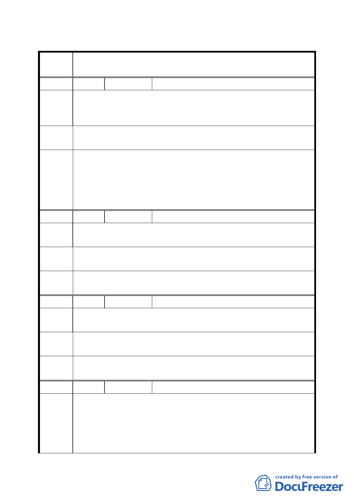

臺北市都市計畫委員會公民或團體陳情意見綜理表
變更臺北市信義區信義段三小段五三之三四地號人行步道用地為
案 名 道路用地計畫案
編號
1 陳情人
領世館大廈管理委員會
陳情理
反對 53-34 地號人行步道用地原已建設為行人徒步區，現又計畫更
改為道路，實在浪費市民的納稅款。而本社區正位於此人行步道
由 之正後方，住戶一開門就碰到來往的車輛實不合理。
建議辦
法
建議保持人行道徒步區。
1.為維持人行步道系統完整並兼顧地主權益，本案中段部分維持人
委員會
決議
行步道用地，東西兩側則變更為道路用地（信義段三小段 43 地
號東側及 47-2 地號西側各 6 公尺作為必要停車場出入使用）。
2.附帶決議：為考量會車及交通寧靜之需求，本段道路應 24 小時
禁止路邊停車且路口須設置車輛出入警示設施。
編號
2 陳情人
何凱湘
陳 情 理 上學 6:30 至 7:30 放學 4:00 至 5:00 國小國中上下學生太多，馬路
由 常被佔滿，應顧及學生安全。
建 議 辦 請維持徒步區。
法
委員會
決議
同編號 1。
編號
3 陳情人
彭邦炯
陳情理
由
綠地步道愈多愈好，空氣品質要把關。
建議辦
法 不要更改。
委員會
決議
同編號 1。
編號
4 陳情人
賴快華
1.路面寬度不及松仁路轉接松勇路之巷道的二分之一，無法騰岀空
陳情理
由
間提供人行道。如果改成道路，頂多只能做單行道由東往西行，
目前為人行道已經有許多車輛違規雙向停車，若改成車道將是車
禍不斷。
2.由松勇路南往北到此巷口若將來車輛由此巷道出來將會車禍不
6